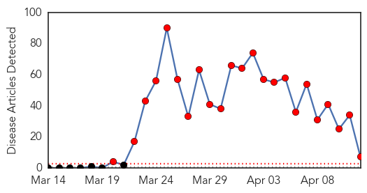
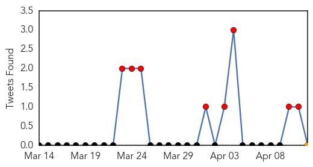
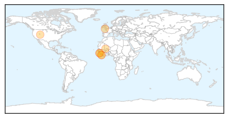
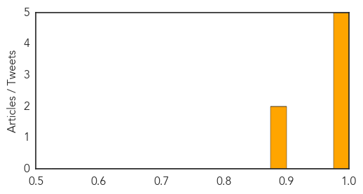
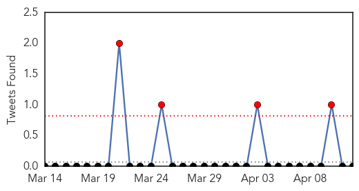

Ebola
30-Day Web Trend
23 alerts, 0 warnings

30-Day Twitter Trend
8 alerts, 0 warnings

Article Locations
Article Confidences
Top Articles:
- 1.000
- Killer virus and international travel and tourism: Virologists say they are deeply worried
- 0.999
- Health workers in Guinea's capital to hunt for Ebola cases
- 0.999
- Ebola virus victim tells of 'miracle' recovery
- 0.995
- Guinea Woman 'Reborn' After Recovering From Deadly Ebola Virus
- 0.994
- Guinean Ebola Survivor Tells of Being 'Reborn' — Naharnet
- 0.891
- New Game Plan Against Epidemics and Access to Quality Healthcare Receive Attention in ECOWAS Countries
- 0.887
- New Game Plan Against Epidemics and Access to Quality Healthcare Receive Attention in ECOWAS Countries
Top Tweets:
-
No tweets found for Apr 12, 2014
Swine Flu
30-Day Web Trend
30-Day Twitter Trend
4 alerts, 0 warnings

Article Locations

Article Confidences

Top Articles:
Top Tweets:
-
No tweets found for Apr 12, 2014